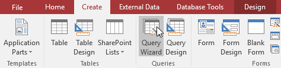
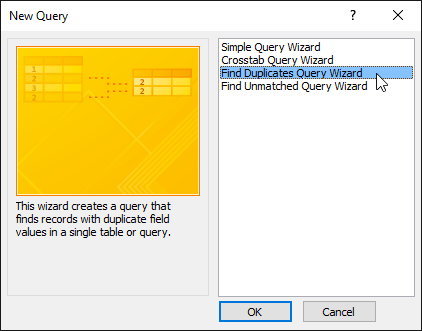
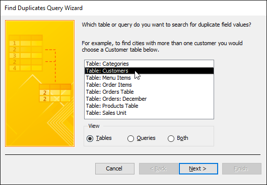
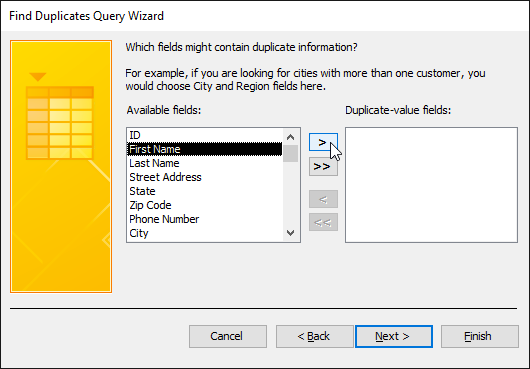
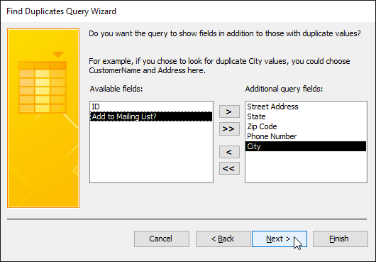
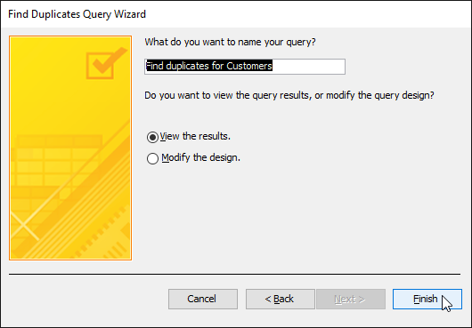
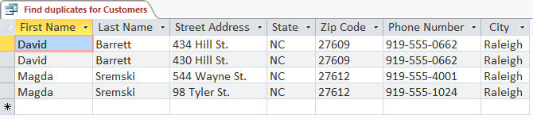

O interogare de găsire a duplicatelor vă permite să căutați și să identificați înregistrări duplicate într-un tabel sau tabele.
O înregistrare duplicată este o înregistrare care se referă la același lucru sau persoană ca o altă înregistrare.
Nu toate înregistrările care conțin informații similare sunt duplicate.
De exemplu, înregistrările a două comenzi care au fost plasate la date diferite, dar care conțineau articole identice nu ar fi înregistrări duplicat.
De asemenea, nu toate înregistrările duplicate conțin informații complet identice.
De exemplu, două înregistrări ale clienților se pot referi la aceeași persoană, dar includ adrese diferite.
Înregistrarea cu adresa învechită ar fi înregistrarea duplicată.
De ce este atât de important să scapi de înregistrările duplicate? Luați în considerare exemplul de mai sus.
Dacă am avea mai multe înregistrări pentru un client, ar fi dificil să vedem un istoric al comenzilor pentru el,
deoarece informațiile ar fi răspândite în mai multe înregistrări neconectate.
Am putea chiar să-i livrăm comanda la adresa greșită dacă persoana care introduce informațiile despre comandă selectează o înregistrare învechită.
Este ușor de văzut cum a avea înregistrări duplicate poate submina integritatea și utilitatea bazei de date.
Din fericire, Access facilitează căutarea și localizarea potențialelor înregistrări duplicate.
Rețineți că Access nu va șterge înregistrările pentru dvs. și nu vă va ajuta să aflați care dintre ele este actuală.
Va trebui să faci aceste lucruri pentru tine.
Dacă sunteți familiarizat cu datele din baza de date, totuși, eliminarea înregistrărilor duplicate va fi o sarcină gestionabilă.
-
Selectați fila Creare din Panglică, localizați grupul Interogări, apoi faceți clic pe comanda Expert Interogare.

-
Va apărea caseta de dialog New Query. Selectați Find Duplicates Query Wizard din lista de interogări, apoi faceți clic pe OK.

-
Selectați tabelul în care doriți să căutați înregistrări duplicate, apoi faceți clic pe Următorul.
Căutăm înregistrări duplicate ale clienților, așa că vom selecta tabelul Clienți.

-
Alegeți câmpurile în care doriți să căutați informații duplicate, selectându-le și făcând clic pe butonul săgeată dreapta.
Selectați numai câmpuri care nu ar trebui să fie identice în înregistrările neduplicate.
De exemplu, deoarece căutăm clienți duplicați, vom selecta doar câmpurile Prenume și Nume,
deoarece este puțin probabil ca mai multe persoane cu exact același nume și nume să plaseze comenzi la brutăria noastră.
-
După ce ați adăugat câmpurile dorite, faceți clic pe Următorul.

-
Selectați câmpuri suplimentare pentru a le vizualiza în rezultatele interogării.
Alegeți câmpuri care vă vor ajuta să faceți distincția între înregistrările duplicate și alegeți pe care doriți să o păstrați.
În exemplul nostru, vom adăuga toate câmpurile referitoare la adresele clienților, plus câmpul Număr de telefon,
deoarece înregistrările cu nume de clienți identice pot conține informații neidentice în acest câmp.
Când sunteți mulțumit, faceți clic pe Următorul.

-
Access va sugera un nume pentru interogarea dvs., dar puteți introduce un alt nume dacă doriți.
Când sunteți mulțumit de numele interogării, faceți clic pe Terminare pentru a rula interogarea.

-
Dacă Access a găsit înregistrări duplicat în interogarea dvs., acestea vor fi afișate în rezultatele interogării.
Examinați înregistrările și ștergeți orice înregistrări învechite sau incorecte, după cum este necesar.

-
Salvați interogările înregistrărilor duplicate și rulați-le des.
-
Investigați potențialele înregistrări duplicate uitându-vă la datele legate în alte tabele.
Puteți face acest lucru căutând numerele ID de înregistrare ale acestor înregistrări în tabelele asociate.
Este o înregistrare legată în mare parte de comenzi vechi, în timp ce alta conține unele mai recente?
Acesta din urmă este probabil cel actual.
-
După ce decideți ce înregistrare să ștergeți, asigurați-vă că nu veți pierde nicio informație de care ați putea avea nevoie.
În exemplul nostru, înainte de a șterge înregistrarea duplicată, am găsit toate comenzile
legate de numărul de identificare al acelei înregistrări și le-am înlocuit cu numărul de identificare al înregistrării pe care am decis să o păstrăm.